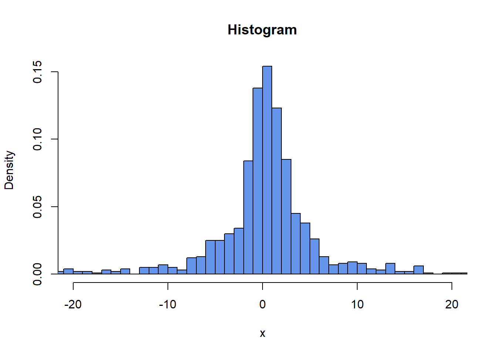

MonteCarlo.Integration <- function(f, n, a, b) {
U <- runif(n, min = a, max = b)
return( (b-a)*mean(f(U)) )
}
set.seed(123)
dAlpha <- 0.95
dLambda <- 2
# Monte Carlo Integration
dGammaMI <- MonteCarlo.Integration(function(x) (-(log(1-x)) / dLambda), 100, dAlpha, 1)
dGammaMI
#> [1] 0.09927233
# Numerical evaluation
dGammaNE <- (-log(1-dAlpha) + 1) / dLambda
dGammaNE
#> [1] 1.997866
# Thus, we should have this relationship
# dGammaNE * (1 - dAlpha) approx dGammaMI
dGammaNE * (1 - dAlpha)
#> [1] 0.0998933127 Retake exam 2024
27.1 Problem 1
27.1.1 Problem 1.1
- Monte Carlo Integration
-
Consider a function
\[f(u) = -\frac{\ln(1-u)}{\lambda},\]
-
where \(\lambda > 0\) and \(u \in (0,1)\). * Consider the following integral
\[\gamma = \frac{1}{1-\alpha} \int_{\alpha}^{1} f(u) \, du\]
- Evaluate the above integral for \(\alpha = 0.95\) and \(\lambda = 2\) using the Monte Carlo integration technique.
- Compare the result of your calculations with the following expression
\[\gamma = \frac{-\ln(1-\alpha)+1}{\lambda}.\]
Solution:
27.1.2 Problem 1.2
- Vectorized if/else statement
- Generate a \(200 \times 200\) matrix where each entry is a standard Uniform random variable.
- Assign the value -1 to those elements of the matrix that are less than 0.5 and 1 to those that are larger than or equal to 0.5.
- Count how many entries are -1 and 1, and report the counts.
Solution:
27.1.3 Problem 1.3
- Recursive functions
- Consider the following power function that calculates \(z^k\) written as \[\text{Power}(z, k) = \begin{cases} 1 & \text{if } k=0 \\ z \times \text{Power}(z, k-1) & \text{if } k > 0 \end{cases}\]
- Write the recursive function.
Solution:
27.1.4 Problem 1.4
- Simulation by Application of the Inversion Method
- Begin by setting the seed to 134.
- Suppose \(\mu = 0.5\) is a location parameter and \(\gamma = 2\).
- Use the inversion method to simulate 1000 Cauchy-distributed random variables using the following inverse cumulative distribution function: \[g(u) = \mu + \gamma \tan\left(\pi \left(u - \frac{1}{2}\right)\right),\] where \(\tan()\) stands for the trigonometric tangent function.
- Plot a histogram using the variables you have just generated.
Solution:
set.seed(134)
dMu <- 0.5
dGamma <- 2
Cauchy.Simulate <- function(mu, lambda, size) {
U <- runif(size)
return(mu + lambda * tan(pi * (U - 1/2)))
}
vX <- Cauchy.Simulate(dMu, dGamma, 1000)
hist(vX,
freq = FALSE,
breaks = 5000,
col = "cornflowerblue",
xlab = "x",
ylab = "Density",
main = "Histogram",
xlim = c(-20, 20))
27.2 Problem 2: (Constrained) Optimization, C++, and Packaging
Note: This problem is best solved in order from 1 - 5.
In this problem, you will numerically maximize the negative Rosenbrock function
\[f(x,y) = -(\pi - x)^2 - 100(y-x^2)^2, \quad (1)\]
where \(\pi\) is the mathematical constant 3.141593… You will use the Steepest Ascent Method (recall Lecture 9). For this purpose, you will need the gradient of \(f\):
\[\nabla f(x,y) = \begin{pmatrix} 2\pi - 2x - 400x^3 + 400xy \\ 200(x^2-y) \end{pmatrix}. \quad (2)\]
27.2.1 Problem 2.1
- Write R functions called
fRosenandfRosen_gradwhich implement equations (1) and (2).
- Write R functions called
Solution:
- Create a C++ script and write C++ functions called
fRosen_cppandfRosen_grad_cppwhich do the same as your R functions in part (a). In your R script, include asourceCpp()command from the Rcpp package which compiles the C++ script and adds all C++ functions from questions 2 and 3 to your environment.
Solution:
// [[Rcpp::depends(RcppArmadillo)]]
#include <RcppArmadillo.h>
using namespace Rcpp;
using namespace arma;
// [[Rcpp::export]]
double fRosen_cpp(vec vX) {
double pi = atan(1)*4; //pi
return(-pow((pi - vX[0]), 2) - 100 * pow((vX[1] - pow(vX[0], 2)), 2));
}
// [[Rcpp::export]]
vec fRosen_grad_cpp(vec vX) {
vec vOutput(2);
double pi = atan(1)*4; //pi
vOutput[0] = 2 * pi - 2 * vX[0] - 400 * pow(vX[0], 3) + 400 * vX[0] * vX[1];
vOutput[1] = 200 * (pow(vX[0], 2) - vX[1]);
return(vOutput);
}suppressMessages(library(Rcpp))
#> Warning: pakke 'Rcpp' blev bygget under R version 4.3.3
suppressMessages(library(RcppArmadillo))
#> Warning: pakke 'RcppArmadillo' blev bygget under R version 4.3.3
sourceCpp("cpp_functions_retake_2024.cpp")
# sanity checks
fRosen(c(0.5, 2))
#> [1] -313.228
fRosen_cpp(c(0.5, 2))
#> [1] -313.228
fRosen_grad(c(0.5, 2))
#> [1] 355.2832 -350.0000
fRosen_grad_cpp(c(0.5, 2))
#> [,1]
#> [1,] 355.2832
#> [2,] -350.000027.2.2 Problem 2.2
- Write an R function called
ascentwhich implemented the Steepest Ascent Method with the Golden Section Method used to compute the step size. The function should accept as arguments the function to be maximized, its gradient, a starting value, a tolerance level, and a maximum number of iterations. It should output a list containing the function maximum and the vector at which the maximum is attained. In case the algorithm does not converge, the list should contain-Infas the function maximum andNAas the vector.
- Write an R function called
Solution:
# golden section algorithm from last week
gsection <- function(f, dX.l, dX.r, dX.m, dTol = 1e-9) {
# golden ratio plus one
dGR1 <- 1 + (1 + sqrt(5))/2
# successively refine x.l, x.r, and x.m
f.l <- f(dX.l)
f.r <- f(dX.r)
f.m <- f(dX.m)
while ((dX.r - dX.l) > dTol) {
if ((dX.r - dX.m) > (dX.m - dX.l)) { # if the right segment is wider than the left
dY <- dX.m + (dX.r - dX.m)/dGR1 # put Y into the right segment according to the golden ratio
f.y <- f(dY)
if (f.y >= f.m) {
dX.l <- dX.m
f.l <- f.m
dX.m <- dY
f.m <- f.y
} else {
dX.r <- dY
f.r <- f.y
}
} else { #if the left segment is wider than the right
dY <- dX.m - (dX.m - dX.l)/dGR1 # put Y into the left segment according to the golden ratio
f.y <- f(dY)
if (f.y >= f.m) {
dX.r <- dX.m
f.r <- f.m
dX.m <- dY
f.m <- f.y
} else {
dX.l <- dY
f.l <- f.y
}
}
}
return(dX.m)
}
line.search <- function(f, vX, vG, dTol = 1e-9, dA.max = 2^5) {
# f is a real function that takes a vector of length d
# x and y are vectors of length d
# line.search uses gsection to find a >= 0 such that
# g(a) = f(x + a*y) has a local maximum at a,
# within a tolerance of tol
# if no local max is found then we use 0 or a.max for a
# the value returned is x + a*y
if (sum(abs(vG)) == 0){
return(vX) # +0*vG
} # g(a) constant
g <- function(dA){
return(f(vX + dA*vG))
}
# find a triple a.l < a.m < a.r such that
# g(a.l) <= g(a.m) and g(a.m) >= g(a.r)
# choose a.l
dA.l <- 0
g.l <- g(dA.l)
# find a.m
dA.m <- 1
g.m <- g(dA.m)
while ((g.m < g.l) & (dA.m > dTol)) {
dA.m <- dA.m/2
g.m <- g(dA.m)
}
# if a suitable a.m was not found then use 0 for a, so just return vX as the next step
if ((dA.m <= dTol) & (g.m < g.l)){
return(vX)
}
# find a.r
dA.r <- 2*dA.m
g.r <- g(dA.r)
while ((g.m < g.r) & (dA.r < dA.max)) {
dA.m <- dA.r
g.m <- g.r
dA.r <- 2*dA.m
g.r <- g(dA.r)
}
# if a suitable a.r was not found then use a.max for a
if ((dA.r >= dA.max) & (g.m < g.r)){
return(vX + dA.max*vG)
}
# apply golden-section algorithm to g to find a
dA <- gsection(g, dA.l, dA.r, dA.m)
return(vX + dA*vG)
}
ascent <- function(f, grad.f, vX0, dTol = 1e-9, n.max = 100) {
vX.old <- vX0
vX <- line.search(f, vX0, grad.f(vX0))
n <- 1
while ((f(vX) - f(vX.old) > dTol) & (n < n.max)) {
vX.old <- vX
vX <- line.search(f, vX, grad.f(vX))
#cat("at iteration", n, "the coordinates of x are", vX, "\n")
n <- n + 1
}
if (n == n.max) {
return(
list(
maximizing.val = NA,
maximum = -Inf,
paste0("Algorithm failed to converge. Maximum iterations reached. Last values:", vX))
)
} else {
return(
list(
maximizing.val = vX,
maximum = f(vX),
"Algorithm converged.")
)
}
}- Use this function to attempt to maximize your
fRosen_cppfunction, usingfRosen_grad_cppas its gradient, and starting value \((1,1)\). This function is difficult to optimize, so it will likely fail to converge.
Remark: You may adapt the example code from Lecture 9 if you wish, including the functions gsection and line.search. If you did not solve question 1(b), you can use the R functions instead of the C++ ones for partial credit.
Solution:
ascent(fRosen_cpp, fRosen_grad_cpp, vX0 = c(1, 1))
#> $maximizing.val
#> [1] NA
#>
#> $maximum
#> [1] -Inf
#>
#> [[3]]
#> [1] "Algorithm failed to converge. Maximum iterations reached. Last values:1.20713041591749"
#> [2] "Algorithm failed to converge. Maximum iterations reached. Last values:1.45716385117783"27.2.3 Problem 2.3
You will now write a function which systematically applies the ascent function over a grid of starting values. To define the grid, let vector \((x_1, x_2, \dots, x_K)\) and \((y_1, y_2, \dots, y_K)\) be the grid coordinates. These are typically in ascending order and evenly spaced. The grid consists of all \(K^2\) points \((x_i, y_j)\), \(i,j \in \{1, \dots, K\}\).
- Write a new R function
grid_ascentwhich has inputs similar to theascentfunction, but instead of a single initial value, it accepts two coordinate vectors. The function should evaluate theascentfunction starting at each grid point. It should return a \(K \times K\) matrix containing the corresponding function maxima found using these starting points.
- Write a new R function
Solution:
grid_ascent <- function(f, grad.f, vX0, vY0, dTol = 1e-9, n.max = 100) {
mOutput <- matrix(NA, length(vX0), length(vY0))
for (x in 1:length(vX0)) {
for (y in 1:length(vY0)) {
vXY0 <- c(vX0[x], vY0[y])
vXY.old <- vXY0
vXY <- line.search(f, vXY0, grad.f(vXY0))
n <- 1
while ((f(vXY) - f(vXY.old) > dTol) & (n < n.max)) {
vXY.old <- vXY
vXY <- line.search(f, vXY, grad.f(vXY))
n <- n + 1
}
if (n == n.max) {
mOutput[x, y] <- -Inf
} else {
mOutput[x, y] <- f(vXY)
}
}
}
return(mOutput)
}- Choose an appropriate grid, and use the output of the
grid_ascentfunction to find a starting point from which theascentfunction converges to a maximum. To give you an idea where to start, try a grid with \(x\) values around 3 and \(y\) values around 9. To begin with, try a relatively small \(K\) (e.g. \(K=5\)) because the run time can be significant for large \(K\). If your grid cannot find any valid starting point, i.e.grid_ascentreturns a matrix of all-Inf, here are some things you can try: make the grid larger by making the min and max of the coordinates further apart, make the grid finer by increasing \(K\), choose a smaller tolerance, or increase the maximum number of iterations. Do these changes gradually, as most of them will make the function run slower.
Solution:
grid_ascent(fRosen_cpp, fRosen_grad_cpp, vX0 = c(2.5, 2.75, 3, 3.25, 3.5), vY0 = c(8.5, 8.75, 9, 9.25, 9.5))
#> [,1] [,2] [,3] [,4] [,5]
#> [1,] -Inf -Inf -Inf -Inf -Inf
#> [2,] -Inf -Inf -Inf -Inf -Inf
#> [3,] -Inf -2.871553e-10 -Inf -Inf -Inf
#> [4,] -Inf -Inf -Inf -1.443747e-09 -Inf
#> [5,] -Inf -Inf -Inf -Inf -Inf- When you find a grid point from which
ascentconverges, evaluateascentat this starting point and report the function maximum and the point at which this maximum is achieved.
Solution:
ascent(fRosen_cpp, fRosen_grad_cpp, vX0 = c(3, 8.75))
#> $maximizing.val
#> [,1]
#> [1,] 3.141604
#> [2,] 9.869677
#>
#> $maximum
#> [1] -2.871553e-10
#>
#> [[3]]
#> [1] "Algorithm converged."
ascent(fRosen_cpp, fRosen_grad_cpp, vX0 = c(3.25, 9.25))
#> $maximizing.val
#> [,1]
#> [1,] 3.141555
#> [2,] 9.869366
#>
#> $maximum
#> [1] -1.443747e-09
#>
#> [[3]]
#> [1] "Algorithm converged."27.2.4 Problem 2.4
- Maximize your
fRosen_cppfunction with theoptimfunction in R, using starting point \((1,1)\),fRosen_cpp_cppfor thegrargument, andmethod = "BFGS". Compare the result with your answer in question 3.
Solution:
27.2.5 Problem 2.5
- Create an R package that contains all the functions you wrote for questions 1-3, and edit the Title of your package in the description file to “This is my exam package”. Export the package as a bundled development version (with file extension .tar.gz), and include it as part of your exam submission.
Remark: If you cannot solve questions 1-3, create a package that contains an R and a C++ function with single scalar input that always return the number 2024.2.